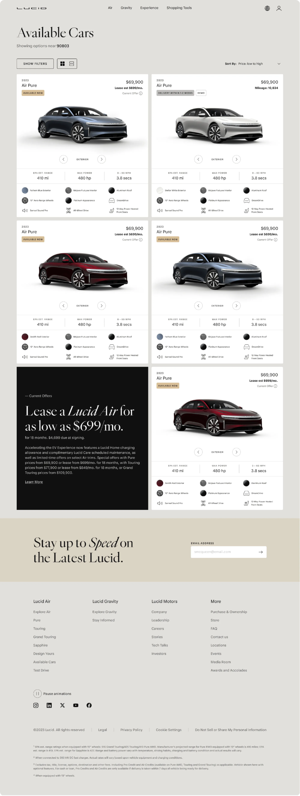
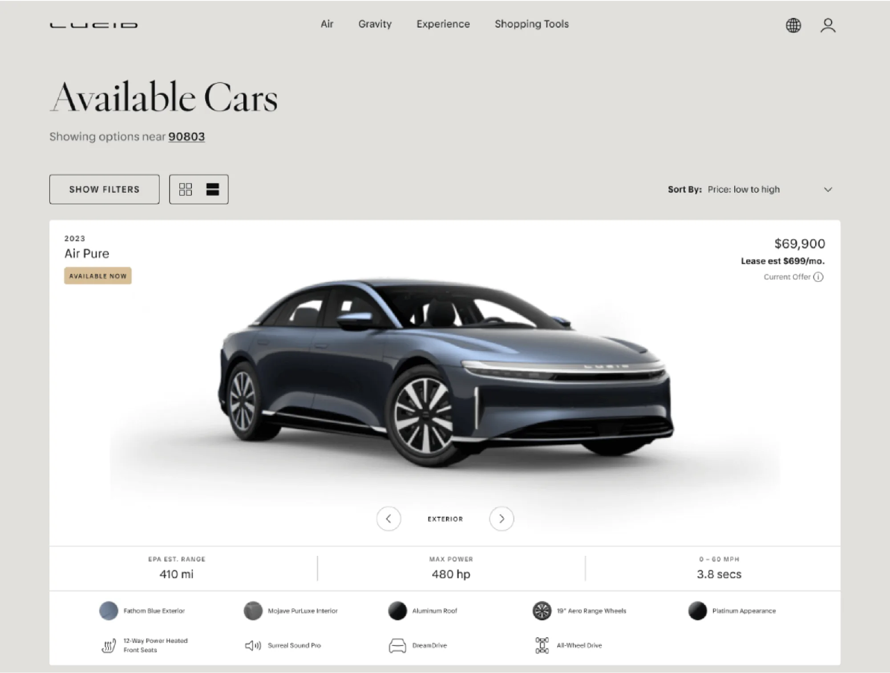
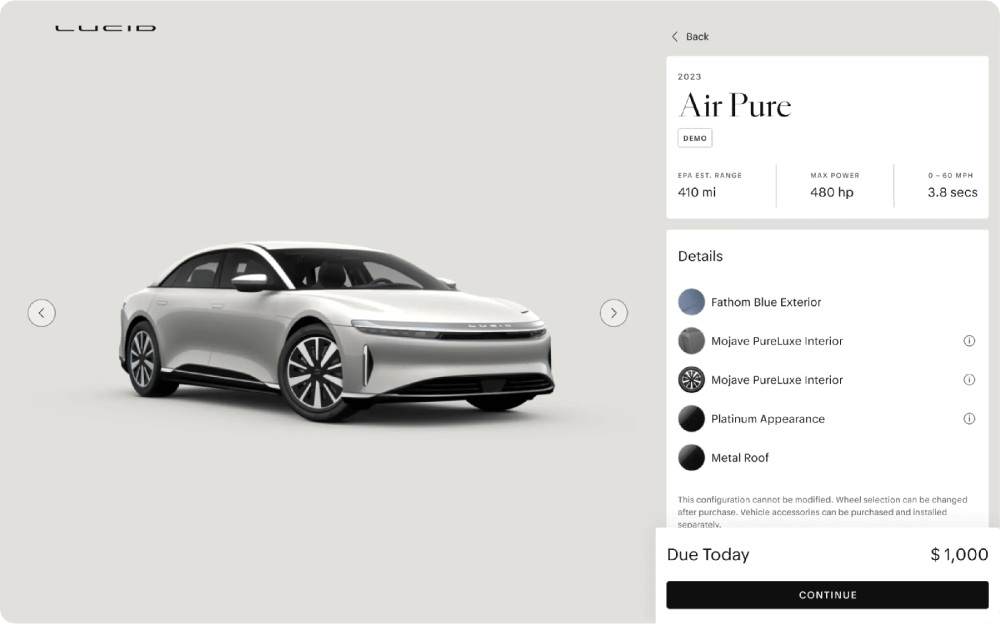
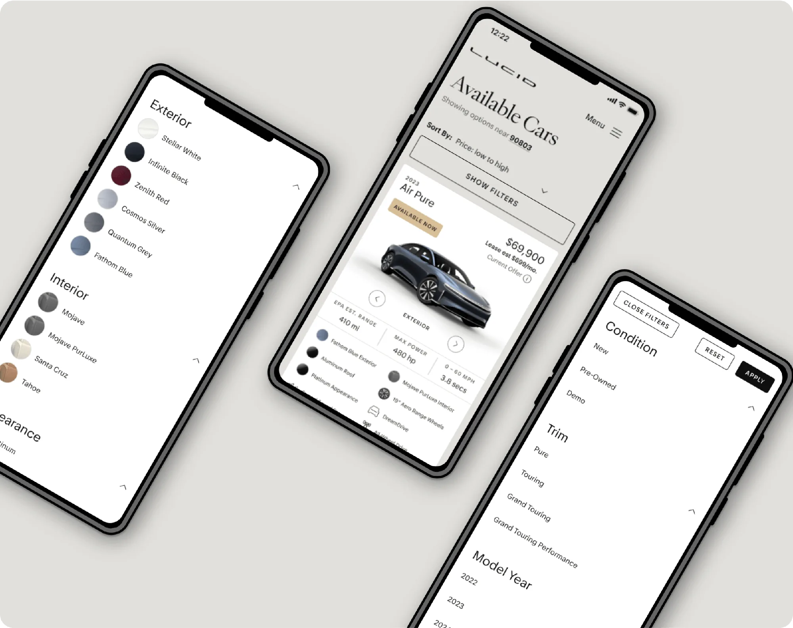

Lucid Motors
Overview
As the lead designer on Lucid Cars’ website redesign, I was responsible for transforming their digital presence to reflect the brand’s innovative and luxurious identity. From concept development to pixel-perfect execution, I crafted a cohesive design that seamlessly integrated user-centric features with stunning visual aesthetics.
This project involved creating intuitive layouts, defining a consistent design language, and collaborating closely with developers to ensure flawless implementation.
The result was a dynamic and engaging website that enhanced the user experience and aligned perfectly with Lucid Cars’ brand vision.




Thank you for scrolling all the way!